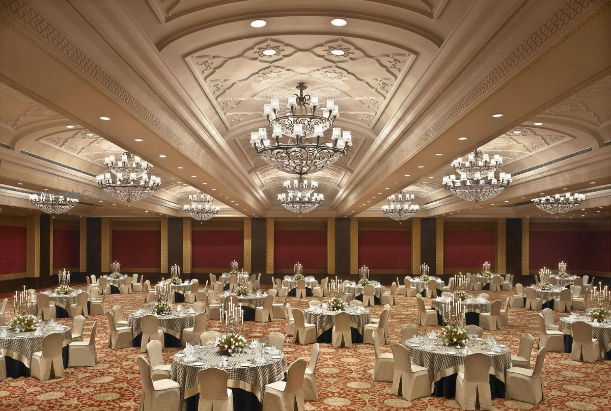

Macaroni is a type or a variety of dry pasta made from durum wheat.
White sauce Pasta
Delicious Creamy Pasta with black truffle essence
About
TAZ Restaurant in Hyderabad, specifically Taz’s Bhagyanagarm Biryani in Boduppal,
is a well-known spot for affordable and flavorful meals, especially biryani.
With a cozy indoor seating area and takeaway options, it offers a diverse menu
that includes spicy biryanis, juicy kebabs, and Indo-Chinese favorites like Manchurian
and fried rice. Loved by locals for its generous portions and quick service, it’s
a go-to place for anyone craving a satisfying and budget-friendly meal in the area.

"Where every bite tells a story of Hyderabad’s spice and soul."